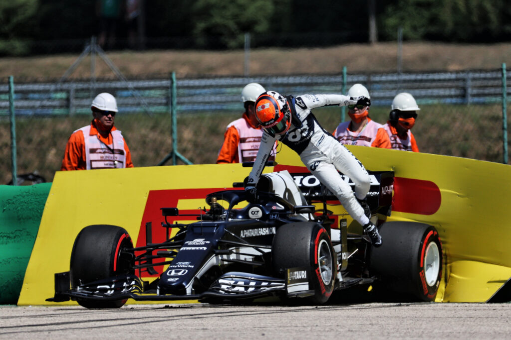

Yuki Tsunoda è nato a Sagamihara l' 11 maggio 2000, è un pilota automobilistico giapponese, attivo in Formula 1 con l'AlphaTauri. Al termine del 2018 la Jenzer Motorsport ingaggiò Tsunoda per disputare il successivo Campionato di Formula 3. Tsunoda chiuse la stagione al nono posto assoluto, con una vittoria sul circuito di Monza. All'inizio del 2020 la Honda annunciò che Tsunoda avrebbe preso parte al campionato FIA Formula 2 con la Carlin. Nel secondo appuntamento della stagione, sul Red Bull Ring, Tsunoda conquistò la pole position e la seconda posizione in gara 1. La prima vittoria in F2 arriva nella Sprint Race di Silverstone; il pilota giapponese si ripete vincendo due Feature Race, una sul Circuito di Spa-Francorchamps e altra sul Circuito del Sakhir. Tsunoda chiude l'anno al terzo posto assoluto alle spalle di Mick Schumacher e Callum Ilott e vincendo il premio Anthoine Hubert, assegnato al miglior esordiente della categoria. Nel 2018 Yuki entra nel Red Bull Junior Team, il programma giovani della Red Bull Racing. Nel dicembre 2020, Tsunoda ha la possibilità di fare i test di fine stagione dopo il Gran Premio di Abu Dhabi con la scuderia AlphaTauri. Il 16 dicembre 2020 viene ufficializzato il suo approdo ufficiale in Formula 1 con la Scuderia AlphaTauri per la stagione 2021, al posto di Daniil Kvjat. È il primo giapponese a correre nella massima serie dal 2014, ultimo anno di attività per Kamui Kobayashi. Tsunoda sceglie come numero di gara il 22, utilizzato l'ultima volta da Jenson Button nel Gran Premio di Monaco 2017.  Il debutto in Formula 1 avviene nel Gran Premio del Bahrain, nel quale il giapponese conquista i suoi primi punti iridati in virtù del nono posto finale. La seconda gara si svolge a Imola, Tsunoda durante le qualifiche finisce a muro ed è costretto a partire ultimo, in gara raggiunge la dodicesima posizione. A Portimão e poi a Barcellona non riesce a tornare a punti, finendo 15º nella prima, e venendo costretto al ritiro dopo solo sette giri nella seconda. Dopo la gara di Monaco, conclusa senza punti, Tsunoda decide di trasferirsi in Italia a Faenza per stare più vicino al dirigente della scuderia Franz Tost. Torna a punti nel Gran premio successivo a Baku, con un settimo posto, e nel Gran Premio di Stiria, nel quale taglia il traguardo in decima posizione. Nel Gran Premio di Gran Bretagna Tsunoda ottiene un altro punto, arrivando decimo, mentre nel Gran Premio d'Ungheria ottiene il miglior piazzamento in carriera, arrivando sesto. Il 7 settembre 2021 Tsunoda e Gasly vengono confermati per la stagione 2022 da AlphaTauri. Nel successivo Gran Premio d'Italia la vettura del giapponese non prende il via alla gara per un problema ai freni, mentre in Turchia Tsunoda è autore di un'ottima difesa su Lewis Hamilton prima di scivolare nelle retrovie per un testacoda. Ad Austin torna in zona punti giungendo nono. Nel Gran Premio di Abu Dhabi, l'ultimo della stagione il pilota nipponico si qualifica settimo e in gara chiude ai piedi del podio, con un ottimo quarto posto. Tsunoda chiude la sua prima stagione in Formula 1 al 14° posto.